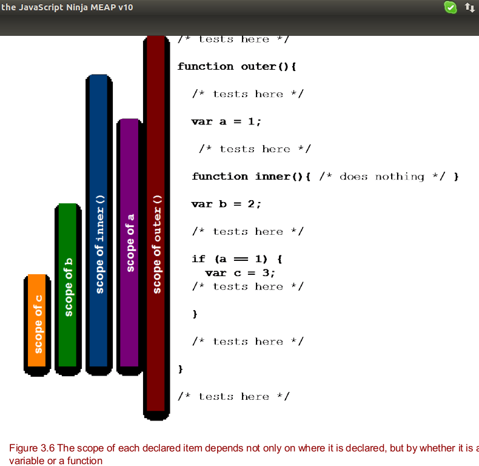

- Variable declarations are in scope from their point of declaration to the end of the
function within which they are declared, regardless of block nesting.
- Named functions are in scope within the entire function within which they are declared, regardless of block nesting.
- For the purposes of declaration scopes, the global context acts like one big function encompassing the code on the page.
- The scope of each declared item depends not only on where it is declared, but by whether it is a variable or a function
